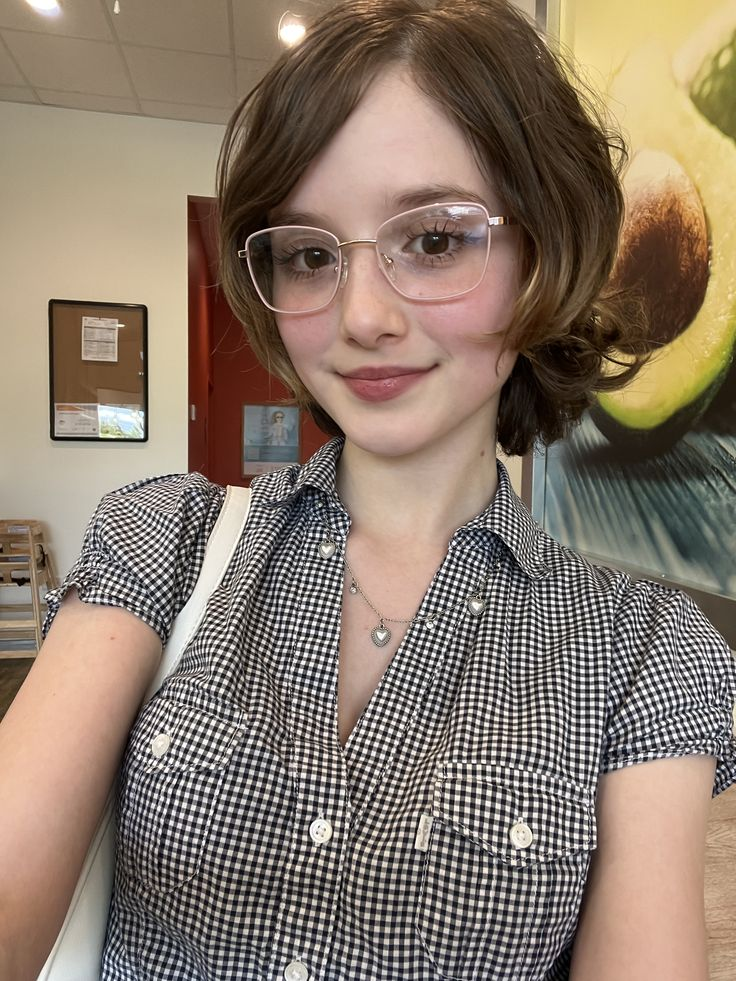

Bem-vindos ao Universo Gorillaz
Gorillaz é uma banda virtual britânica criada em 1998 pelos músicos Damon Albarn e Jamie Hewlett.
Conhecida por sua abordagem inovadora que combina música, arte visual e storytelling, a banda revolucionou o conceito de grupo musical ao apresentar membros fictícios animados:
2-D (vocalista), Murdoc Niccals (baixista), Noodle (guitarrista) e Russel Hobbs (baterista).
Com mais de 25 anos de carreira, o Gorillaz já vendeu mais de 25 milhões de álbuns mundialmente e é reconhecido pelo Guinness Book como a "banda virtual de maior sucesso".
Sua música transita entre diversos gêneros como rock alternativo, hip hop, eletrônica, pop e world music, sempre acompanhada de videoclipes únicos e narrativas envolventes.
Explore nosso site para descobrir a fascinante história da banda, conhecer cada integrante virtual,
mergulhar na discografia completa e se conectar com uma das comunidades de fãs mais dedicadas da música mundial.
Ouça Agora - Hit do Momento
Feel Good Inc. - Um dos maiores sucessos do Gorillaz
O que os fãs dizem

Andressa
Amo a mistura de estilos e a criatividade do Gorillaz! Uma banda única quando o quesito é inovação, sempre se reformulando a cada dia que passa,
simplesmente fenomenal. Minha favorita é Plastic Beach, o álbum é incrível do começo ao fim!
Márcio Albuquerque
Simplesmente fantástico, a mistura de estilos é incrível e marcante, uma banda única que marcou minha vida! Desde a infância até os dias de hoje!
Sou apaixonado por cada álbum e cada videoclipe, é uma experiência audiovisual completa. Mas como favorita, na minha opinião é Demon Days.
Novo Álbum - Fase 8

A Fase 8 está chegando
O Gorillaz está prestes a iniciar uma nova era: a Fase 8.
O novo álbum já tem data especulada para 20 de março de 2026 e se chamará The Mountain.
Como sempre, podemos esperar uma estética renovada e sonoridades
surpreendentes que exploram novos gêneros e colaborações especiais.
A comunidade já discute intensamente o futuro da narrativa visual e
musical da banda — prometendo mais uma fase inesquecível.